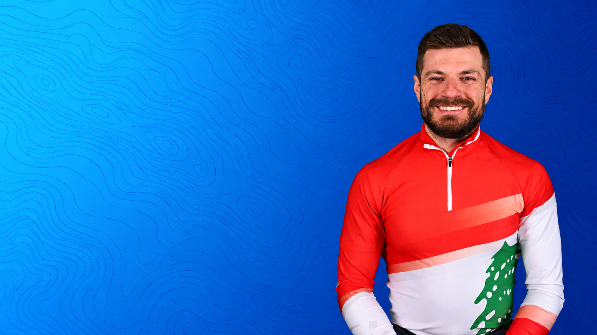
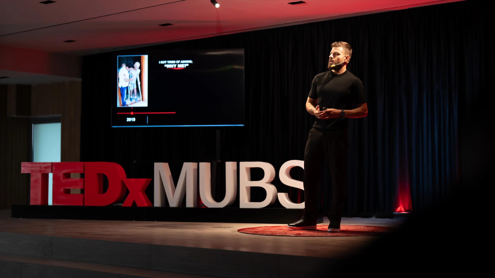

BUILD WHAT’S
NEXT.
Progress starts where you are. Through talks shaped by Olympic sport and rebuilding after injury, Samer helps people take their next step with purpose.

Progress starts where you are. Through talks shaped by Olympic sport and rebuilding after injury, Samer helps people take their next step with purpose.

In a world brimming with challenges, Samer’s speaking integration helps leaders and organizations build resilience and a limitless mindset, illuminating the path to excellence and unlocking potential within all facets of work and life.